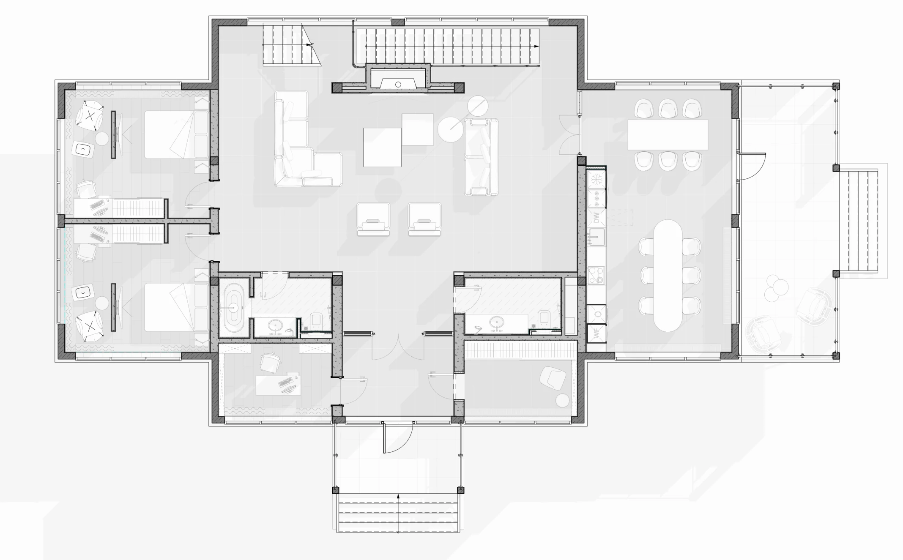

Проект
Загородный дом
Проект соединяет загородную деревянную конструкцию с более спокойной современной подачей. Балки, стойки и декоративные решетки оставлены как основа характера, а светлые плоскости, низкая мебель и крупная плитка убирают ощущение перегруженного шале.
Интерьер держится на контрасте грубой фактуры дерева и мягких предметов: диванов, текстиля, округлого света и спокойной обеденной группы. За счет этого пространство выглядит теплым, но не декоративным.

Тип Загородный дом
Площадь 200 м²
Локация г. Истра, Подмосковье, Россия
Статус В разработке